Precalculus – Unit 01: Function Foundations
Essential Standard
Learning Target: Students will evaluate functions and solve equations of the form f(x) = a using tables, algebraic and graphical methods.
- I can evaluate a function written in function notation for given input values.
- I can solve equations of the form f(x) = a algebraically when f(x) is linear or a factorable quadratic,.
- I can solve equations of the form f(x) = a graphically or with a table.
- I can verify and interpret solutions within the context of the function and its graph.
Learning Target: Students will represent and interpret sets using interval or inequality notation and graphically on a number line.
- I can translate between inequalities and interval notation.
- I can represent solution sets graphically on a number line.
- I can determine whether endpoints are included or excluded and justify my reasoning.
Learning Target: Students will determine and justify the domain and range of functions using graphical and algebraic reasoning.
- I can determine the domain of a function from its graph or equation.
- I can determine the range of a function from its graph or equation.
- I can explain restrictions in domain and range based on function structure.
Learning Target: Students will analyze and apply transformations of parent functions using the form a*f(x - h) + k.
- I can identify and describe vertical and horizontal shifts of parent functions.
- I can determine the effects of reflections and vertical stretches or compressions on parent functions.
- I can sketch transformed functions using structural reasoning or write an equation based on a graph.
Learning Target: Students will analyze limits graphically by examining how functions behave as x approaches a value from the left and right.
- I can determine left-hand and right-hand limits from a graph.
- I can determine whether a limit exists using left-hand and right-hand limits near jumps, holes, and vertical asymptotes.
- I can distinguish between the limit of a function and the actual function value shown on a graph.
Learning Ladder
| Rung | I Can Statement | Math Practice | DOK | Level |
|---|---|---|---|---|
| 8 | I can model a real-world situation involving functions, select appropriate representations, justify my reasoning, and evaluate whether my model is reasonable in context. | 4. Model with Math / 3. Construct Arguments | DOK 4 | Above |
| 7 | I can design and evaluate a solution strategy for a multi-step function problem, defend my approach, and critique alternative methods. | 1. Make Sense & Persevere / 3. Construct Arguments | DOK 4 | Above |
| 6 | I can analyze multiple representations of a function and explain how transformations affect its structure, key features, and behavior. | 7. Look for Structure / 8. Look for Regularity | DOK 3 | Essential |
| 5 | I can determine the domain and range of a function and explain algebraic and graphical restrictions, connecting them to the function’s real-world or mathematical meaning. | 2. Reason Abstractly & Quantitatively | DOK 3 | Essential |
| 4 | I can determine left-hand and right-hand limits from graphs and explain how they relate to the existence of a limit. | 6. Attend to Precision | DOK 2 | Essential |
| 3 | I can translate between interval notation, inequalities, and graphical representations, and explain why a given representation is appropriate. | 5. Use Tools Strategically | DOK 2 | Essential |
| 2 | I can determine the domain and range of a function from its graph or equation. | 2. Reason Abstractly | DOK 1 | Essential |
| 1 | I can evaluate a function using function notation and interpret the meaning of the input and output. | 1. Make Sense of Problems | DOK 1 | Essential |
Progress Tracking
Assessment Methods by DOK Level
Format: 3–5 minute warm-up, quick check, or exit ticket
Purpose: Check whether students can recall vocabulary, evaluate functions, read basic graph features, and use notation accurately without needing multi-step reasoning.
Assessment Ideas
- Function Notation Fluency Check Can Be Assessed After Unit 3, Section 1 – Students evaluate 2–3 functions such as f(3), g(−2), or h(a), then write one sentence explaining what the input and output represent.
- Domain and Range Identification Check Can Be Assessed After Unit 3, Section 3 – Students are given a simple graph or equation and identify the domain or range using interval notation.
- Transformation Vocabulary Match Can Be Assessed After Unit 3, Section 4 – Students match equations such as f(x)+3, f(x−4), −f(x), and 2f(x) to transformation descriptions.
- Limit Reading Check Can Be Assessed After Unit 3, Section 5 – Students read a graph and identify a left-hand limit, right-hand limit, or function value at a point.
Students who struggle here need more direct practice with notation, vocabulary, and graph reading before moving into explanation-based tasks.
Format: Exit ticket, partner check, whiteboard response, or short written explanation
Purpose: Check whether students can apply procedures in context, connect representations, and explain a decision using correct mathematical language.
Assessment Ideas
- Notation Translation Task Can Be Assessed After Unit 3, Section 2 – Students convert between inequality notation, interval notation, and number-line graphs. They must justify endpoint inclusion or exclusion.
- Graphical Limit Decision Can Be Assessed After Unit 3, Section 5 – Students determine left-hand and right-hand limits and whether a limit exists.
- Transformation Identification from Equation or Graph Can Be Assessed After Unit 3, Section 4 – Students identify shifts, reflections, and vertical stretches/compressions from a transformed equation or graph.
- Solve f(x)=a Two Ways Can Be Assessed After Unit 3, Section 1 – Students solve a simple equation algebraically and confirm it graphically or with a table.
Students at this level can usually perform the skill, but the formative check reveals whether they understand when and why a representation or method is appropriate.
Format: Constructed response, gallery walk, error analysis, or group explanation
Purpose: Check whether students can reason strategically, justify conclusions, compare representations, and explain structure.
Assessment Ideas
- Domain Restriction Explanation Can Be Assessed After Unit 3, Section 3 – Students determine domain and range, then explain why restrictions occur using function structure, graph behavior, or context.
- Transformation Analysis Task Can Be Assessed After Unit 3, Section 4 – Students compare a parent function and a transformed function, then explain how a, h, and k affect structure, key features, and graph behavior.
- Limit Reasoning Task Can Be Assessed After Unit 3, Section 5 – Students analyze graphs with holes, jumps, point values, and vertical asymptotes, then explain why limits exist or fail to exist.
- Error Analysis Response Can Be Assessed After Unit 3, Section 5 – Students critique an incorrect solution, identify the misconception, and write a corrected explanation.
This level shows whether students truly understand the mathematics behind the procedures. These tasks are ideal for deciding who is ready for extension or who needs reteaching.
Format: Performance task, extended response, modeling task, or strategy defense
Purpose: Check whether students can synthesize multiple concepts, make decisions, justify a model, and evaluate reasonableness.
Assessment Ideas
- Function Modeling Task Can Be Assessed After Unit 3, Section 5 – Students model a situation using a function, choose an appropriate representation, explain key features, and evaluate whether the model is reasonable.
- Design-a-Graph Task Can Be Assessed After Unit 3, Section 5 – Students create a graph that satisfies several conditions involving domain, range, transformations, and limit behavior, then justify their design.
- Strategy Defense Task Can Be Assessed After Unit 3, Section 5 – Students solve a multi-step function problem using more than one method and defend which method is more efficient or more reliable.
- Critique and Redesign Task Can Be Assessed After Unit 3, Section 5 – Students evaluate a flawed mathematical argument involving domain, transformations, or limits, then revise it into a correct solution.
DOK 4 tasks show whether students can transfer learning to unfamiliar situations. These are best used sparingly, often as short performance checks or unit-level extensions.
Summative Assessment Plan
Unit 1 Summative Assessment Unit 1 Assessed During Unit 3
Assessment is designed for a 45-minute time limit.
5 Questions DoK 1 – Function evaluation, domain/range identification, basic transformations
4 Questions DoK 2 – Translation between representations, limit determination, transformation identification
2 Questions DoK 3 – Explanation of restrictions, transformation reasoning, limit justification
1 Question DoK 4 – Multi-step reasoning, modeling, or critique task
Holistic Rubric
The student demonstrates a strong and flexible understanding of Unit 1 concepts. Work is accurate, well-organized, and supported by clear reasoning. The student can move between algebraic, graphical, tabular, and verbal representations and can justify conclusions using appropriate mathematical language. Minor errors, if present, do not interfere with the overall reasoning.
The student demonstrates solid understanding of the essential Unit 1 concepts. Most work is accurate, and the student can complete standard and moderately complex tasks independently. Explanations are generally clear, though they may lack some precision or depth. Errors are minor or isolated and do not show major misconceptions.
The student demonstrates partial but passable understanding of Unit 1 concepts. The student can complete many routine tasks but may need support with multi-step reasoning, justification, or connecting representations. Work may contain errors, incomplete explanations, or inconsistent notation, but there is enough evidence that the student understands the main ideas.
The student does not yet demonstrate sufficient understanding of the essential Unit 1 concepts. Work shows major errors, missing reasoning, incorrect notation, or confusion between key ideas such as function value vs. limit, domain vs. range, or transformation effects. The student may need reteaching, additional practice, or reassessment to show proficiency.
Strictly Assessment Bank
Unit 1 Assessment Bank: Problems are organized by Depth of Knowledge and pulled from the uploaded teacher banks. These are intended as source items for formative assessments, reassessments, and summative assessment versions.
Rolling timing: Unit 1 is assessed during Unit 3.
Let \(f(x)=2x^2-3\). Evaluate:
- \(f(2)\)
- \(f(-3)\)
Let \(f(x)=x^2-2x\). Evaluate:
- \(f(3)\)
- \(f(-2)\)
Let \(g(x)=x^2-2x\). Evaluate:
- \(g(a)\)
- \(g(t-2)\)
Let \(m(x)=4x-7\). Evaluate:
- \(m(0)\)
- \(m(5)\)
- \(m(-2)\)
Let \(p(x)=-3x^2+1\). Evaluate:
- \(p(1)\)
- \(p(-2)\)
Use the table for \(f(x)\).
| \(x\) | -2 | -1 | 0 | 1 | 2 |
|---|---|---|---|---|---|
| \(f(x)\) | 7 | 3 | -1 | 3 | 7 |
- Find \(f(-1)\).
- Find \(f(2)\).
- Find the value(s) of \(x\) where \(f(x)=7\).
Use the table for \(h(x)\).
| \(x\) | -3 | -1 | 0 | 2 | 4 |
|---|---|---|---|---|---|
| \(h(x)\) | 10 | 4 | 1 | -5 | -11 |
- Find \(h(0)\).
- Solve \(h(x)=4\) using the table.
Solve \(f(x)=9\) when \(f(x)=3x-6\).
Solve \(g(x)=0\) when \(g(x)=x^2-5x\).
Solve \(r(x)=12\) when \(r(x)=2x^2-6\).
Let \(A(t)=5t+12\). Find the input \(t\) when \(A(t)=37\).
Let \(B(x)=(x-4)(x+2)\). Solve \(B(x)=0\).
Use the table to solve \(q(x)=6\).
| \(x\) | -4 | -2 | 0 | 2 | 4 |
|---|---|---|---|---|---|
| \(q(x)\) | 14 | 6 | 2 | 6 | 14 |
Let \(C(n)=2n^2+n\). Evaluate \(C(3)\) and \(C(-1)\).
Write the inequality \(-2 \le x < 5\) in interval notation.
Write the interval \((3, 9]\) as an inequality.
Write the inequality \(x \ge -4\) in interval notation.
Write the interval \(( -\infty, 7 )\) as an inequality.
Determine whether each endpoint is included or excluded in \([1, 6)\).
- Endpoint \(1\)
- Endpoint \(6\)
Write the set of all real numbers greater than \(-3\) using interval notation.
Write the set of all real numbers less than or equal to \(8\) using inequality notation.
Circle the correct interval notation for \(-5 < x \le 2\).
- \([-5,2]\)
- \((-5,2]\)
- \([-5,2)\)
- \((-5,2)\)
Write the interval shown on the number line in interval notation.

Write the graph shown on the number line as an inequality.

Write the graph shown on the number line in interval notation.
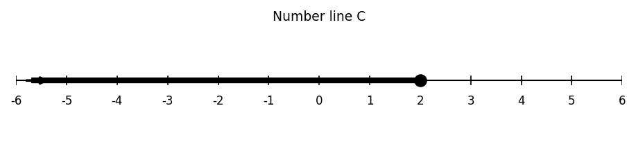
Write the graph shown on the number line as an inequality.

Choose the correct symbol to make the statement match the interval \(( -\infty, 4 ]\): \(x \; \_ \; 4\).
- \(<\)
- \(\le\)
- \(>\)
- \(\ge\)
State whether \(x=3\) is included in each set.
- \((3, 10]\)
- \([3, 10)\)
- \(x>3\)
- \(x\le 3\)
Determine the domain of $f(x)=x^2-4x+7$.
Determine the domain of $g(x)=\sqrt{x-5}$.
Determine the domain of $h(x)=\sqrt{x+2}$.
Determine the domain of $p(x)=\frac{1}{x-3}$.
Determine the domain of $r(x)=\frac{2x+1}{x+4}$.
Use the graph to determine the range of the function. Write your answer in interval notation.
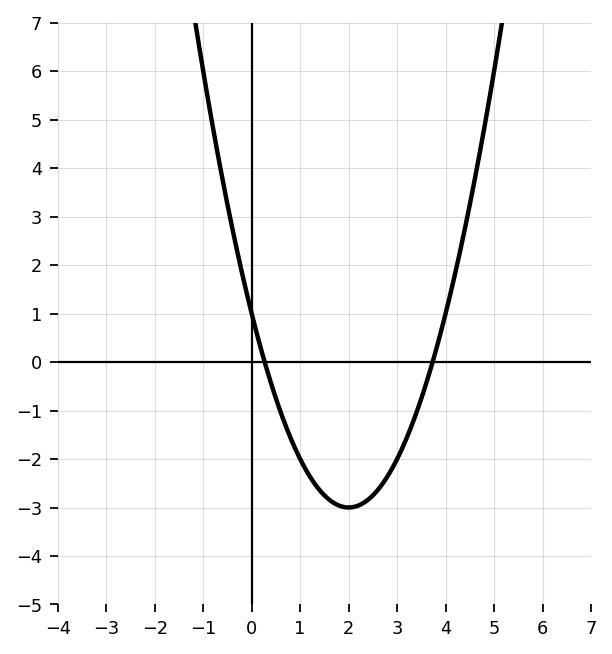
Use the graph to determine the domain of the function. Write your answer in interval notation.

Use the graph to determine the domain and range of the function.

State whether each endpoint is included or excluded in $[-3,7)$.
Rewrite the set $x\ge -1$ in interval notation.
Rewrite the set $-5
Use the number line to write the set in interval notation.

Determine the domain of $f(x)=\sqrt{9-x}$.
Determine the domain of $f(x)=\frac{x+2}{x^2-9}$.
For \(g(x)=f(x)+4\), describe the transformation from \(f(x)\) to \(g(x)\).
For \(g(x)=f(x-3)\), describe the transformation from \(f(x)\) to \(g(x)\).
For \(g(x)=-f(x)\), describe the transformation from \(f(x)\) to \(g(x)\).
For \(g(x)=2f(x)\), describe the transformation from \(f(x)\) to \(g(x)\).
Use the graph to identify the horizontal and vertical shifts from the parent function.
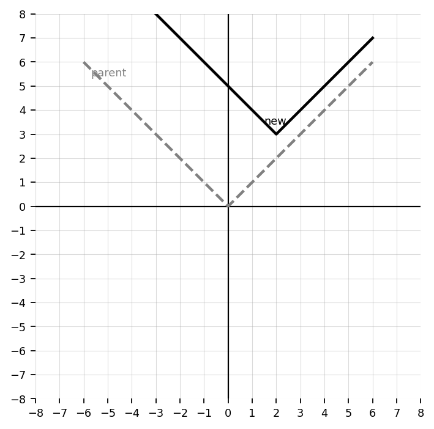
Use the graph to identify the reflection and shifts from the parent function.

Use the graph to identify the vertical stretch/compression and shifts from the parent function.

Use the graph to identify the parent function and describe the transformation.
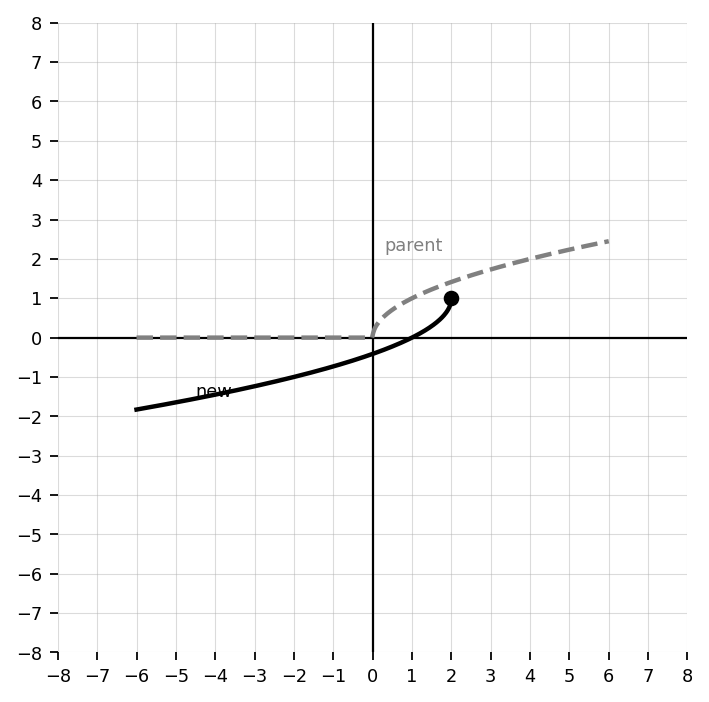
Write the transformation form for “shift \(f(x)\) left 5 units and down 2 units.”
Write the transformation form for “reflect \(f(x)\) over the \(x\)-axis and shift up 6 units.”
Identify the value of \(a\), \(h\), and \(k\) in \(g(x)=-3f(x+2)-5\).
Identify the value of \(a\), \(h\), and \(k\) in \(g(x)=\frac{1}{2}f(x-4)+1\).
For \(g(x)=|x-6|+2\), identify the parent function and the transformations.
For \(g(x)=-(x+1)^2-3\), identify the parent function and the transformations.
Use the graph to determine \(\lim_{x\to 2} f(x)\).

Use the graph to determine \(\lim_{x\to 1^-} f(x)\) and \(\lim_{x\to 1^+} f(x)\).

Use the graph to describe what happens to \(f(x)\) as \(x\to 2^-\) and as \(x\to 2^+\).
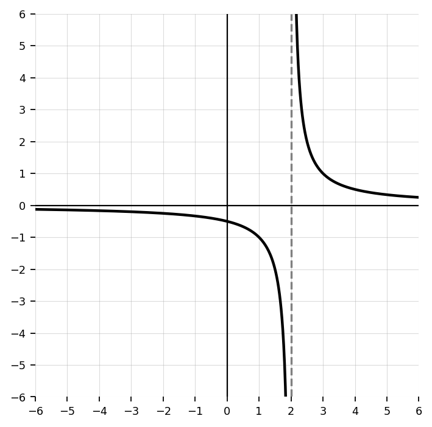
Use the graph to determine \(\lim_{x\to 1} f(x)\).

Use the graph to determine \(\lim_{x\to 0} f(x)\) and \(f(0)\).
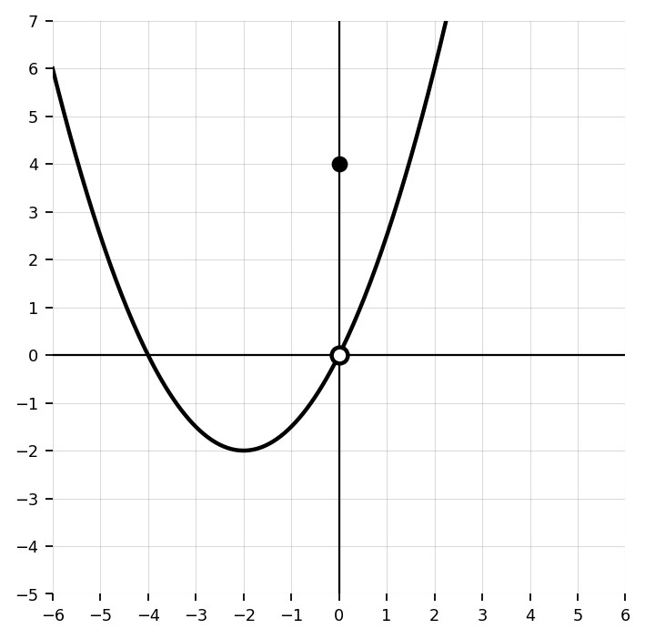
Use the graph to determine the left-hand and right-hand limits as \(x\to -1\).

Use the graph to determine \(\lim_{x\to 2} f(x)\).
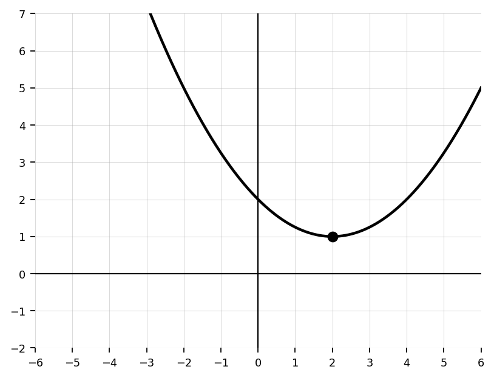
Use the graph to describe the limit as \(x\to -1\).

Use the graph to find \(\lim_{x\to -2^-} f(x)\), \(\lim_{x\to -2^+} f(x)\), and \(f(-2)\).

Use the graph to determine whether \(\lim_{x\to -3} f(x)\) exists.

Use the graph to determine \(\lim_{x\to -1} f(x)\) and \(f(-1)\).
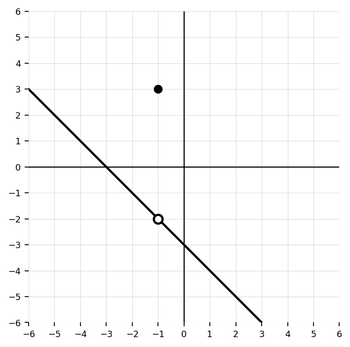
Use the graph to describe the behavior of \(f(x)\) as \(x\to -2\).

Complete the statement: If \(\lim_{x\to a^-} f(x)=3\) and \(\lim_{x\to a^+} f(x)=3\), then \(\lim_{x\to a} f(x)=\underline{\hspace{1in}}\).
Complete the statement: If the left-hand and right-hand limits are not equal, then the two-sided limit \(\underline{\hspace{1.5in}}\).
Let \(f(x)=x^2-6x+8\).
- Solve \(f(x)=0\) algebraically.
- Explain what the solutions mean in terms of the graph of \(y=f(x)\).
Let \(g(x)=2x+1\).
- Solve \(g(x)=9\) algebraically.
- Create a two-row table that confirms your solution.
The graph of \(f(x)=2x-3\) and the horizontal line \(y=5\) are shown. Use the graph to solve \(f(x)=5\), then verify algebraically.
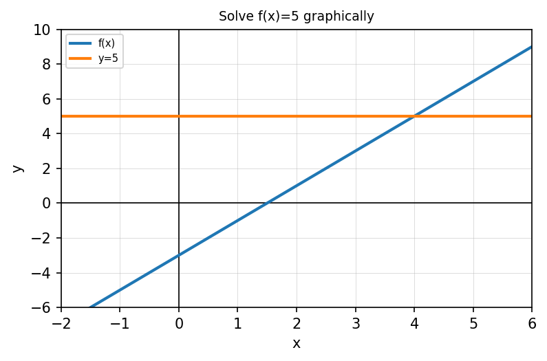
The graph of \(g(x)=x^2-4\) and the horizontal line \(y=5\) are shown. Use the graph to solve \(g(x)=5\), then verify algebraically.

The graph of \(h(x)=-(x-1)^2+4\) is shown. Use the graph to solve \(h(x)=0\). Then check your solutions by substitution.

The graph of \(p(x)=\frac12x+2\) and the horizontal line \(y=-1\) are shown. Use the graph to estimate the solution to \(p(x)=-1\), then solve exactly.

A function \(f\) is represented by the table below.
| \(x\) | -2 | -1 | 0 | 1 | 2 | 3 |
|---|---|---|---|---|---|---|
| \(f(x)\) | -3 | 0 | 1 | 0 | -3 | -8 |
- Solve \(f(x)=0\) using the table.
- Describe what those solutions would look like on a graph.
Let \(k(x)=x^2+2x-8\).
- Solve \(k(x)=0\) by factoring.
- State the ordered pairs where the graph crosses the \(x\)-axis.
Let \(m(x)=3x^2-12\).
- Solve \(m(x)=0\).
- Solve \(m(x)=15\).
- Explain why the second equation has different solutions than the first.
Let \(P(t)=25-5t\), where \(P(t)\) is the number of pages left to read after \(t\) minutes.
- Find \(P(3)\).
- Solve \(P(t)=0\).
- Interpret both answers in context.
Use the table to estimate the solution(s) to \(f(x)=10\).
| \(x\) | -1 | 0 | 1 | 2 | 3 | 4 |
|---|---|---|---|---|---|---|
| \(f(x)\) | 18 | 10 | 6 | 6 | 10 | 18 |
Then write a sentence explaining how the table shows your answer.
Let \(f(x)=2(x-1)(x+4)\).
- Solve \(f(x)=0\).
- Evaluate \(f(0)\).
- Explain the difference between solving \(f(x)=0\) and evaluating \(f(0)\).
Let \(T(x)=4x+7\).
- Create a table for \(x=-2,-1,0,1,2\).
- Use the table to solve \(T(x)=3\).
- Verify algebraically.
Let \(f(x)=x^2-9\). A student says the solution to \(f(x)=0\) is \(x=3\). Determine whether the student is correct and explain.
Translate each representation.
- Write \([-2, 4)\) as an inequality.
- Describe how you would graph the endpoints on a number line.
Translate each representation.
- Write \(-6 < x < 1\) in interval notation.
- Describe the graph using open or closed circles.
A solution set is described as: all real numbers at least \(2\) and less than \(9\).
- Write the set as an inequality.
- Write the set in interval notation.
- Describe its number-line graph.
A solution set is described as: all real numbers greater than \(-5\) but no more than \(3\).
- Write the set as an inequality.
- Write the set in interval notation.
- Explain which endpoints are included.
Complete the table.
| Description | Inequality | Interval Notation |
|---|---|---|
| All values from \(-1\) to \(6\), including both endpoints | ||
| All values less than \(4\) |
Write two different representations for the set of values shown: all real numbers greater than or equal to \(-2\).
- Inequality notation
- Interval notation
- Number-line description
Determine whether each value belongs to the interval \((-3, 5]\).
- \(-3\)
- \(0\)
- \(5\)
- \(6\)
Explain one of your decisions.
The number line shows a solution set.
- Write the set in interval notation.
- Write the set as an inequality.
- Explain how the open endpoints affect the notation.
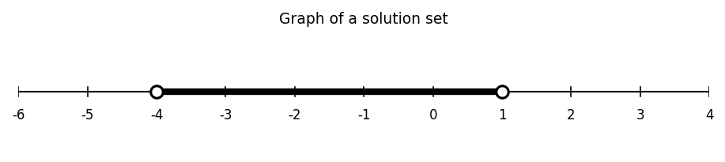
The number line shows a solution set.
- Write the set in interval notation.
- Write the set as an inequality.
- Explain why the endpoint is included.

The number line shows a solution set.
- Write the set in interval notation.
- Write the set as an inequality.
- Explain why the endpoint is excluded.
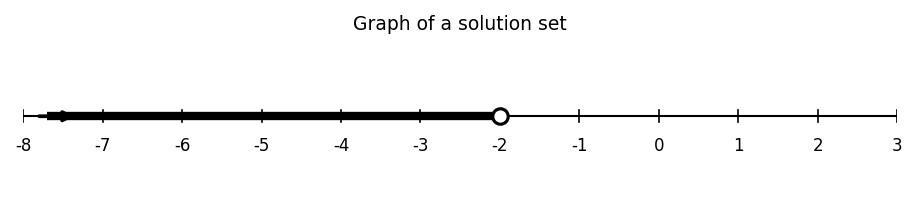
A student writes \(x> -1\) as \([-1,\infty)\). Identify the mistake and write the correct interval notation.
A student writes \([0,7)\) as \(0 \le x \le 7\). Identify the mistake and write the correct inequality notation.
Graph \(-4 \le x < 2\) on a number line. Then write one sentence explaining your endpoint choices.
Graph \(( -\infty, 1 ]\) on a number line. Then write the equivalent inequality.
Determine the domain of $f(x)=\sqrt{2x-6}$ and write it in interval notation.
Determine the domain of $g(x)=\sqrt{12-3x}$ and write it in interval notation.
Determine the domain of $h(x)=\frac{x+5}{x^2-4x}$.
Determine the domain of $p(x)=\frac{3}{(x+1)(x-6)}$.
Determine the domain and range of the graphed function. Use interval notation.
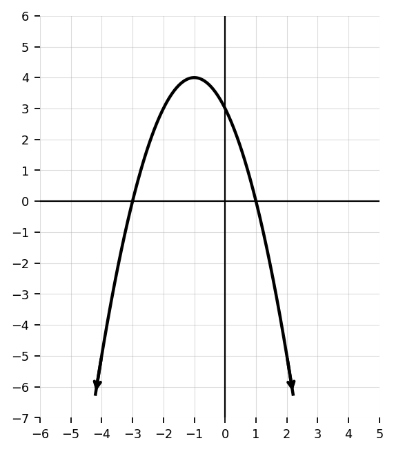
Determine the domain and range of the graphed function. Use interval notation.

Determine the domain and range of the graphed function. Use interval notation.

A function has domain $(-\infty,-2]\cup(1,\infty)$. Describe what this means in words.
A graph has domain $[-4,6)$ and range $(-2,5]$. Describe the possible endpoints and output values.
The table gives values of a function. Determine the domain and range of the relation.
- $x$: $-3,-1,0,4,7$
- $f(x)$: $5,2,2,-6,1$
The table gives values of a function. Determine the domain and range of the relation.
- $x$: $-2,-2,1,3,5$
- $g(x)$: $4,6,0,0,-1$
A function $C(t)$ represents the cost of renting a kayak for $t$ hours. The rental shop allows rentals from $0$ to $8$ hours. State the reasonable domain in interval notation and explain the endpoint inclusion.
A function $H(t)$ represents the height of a ball thrown from the ground. The maximum height is $64$ feet and the ball returns to the ground. State a reasonable range and explain it.
Determine the domain of $f(x)=\frac{\sqrt{x-1}}{x-5}$.
Write an equation for the graph of \(y=x^2\) shifted right 4 units and up 1 unit.
Write an equation for the graphed quadratic transformation.
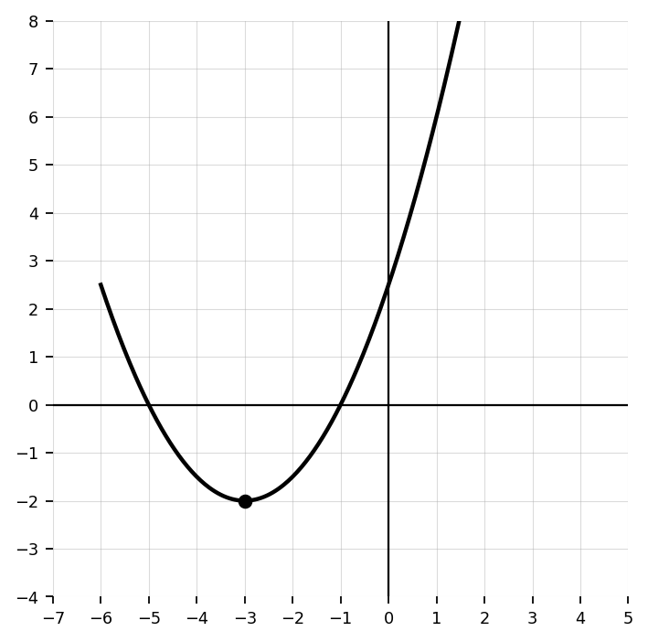
Write an equation for the graphed absolute value transformation.

Write an equation for the graphed cube root transformation.
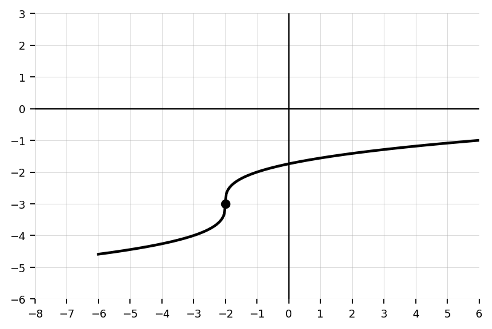
Write an equation for the graphed square root transformation.
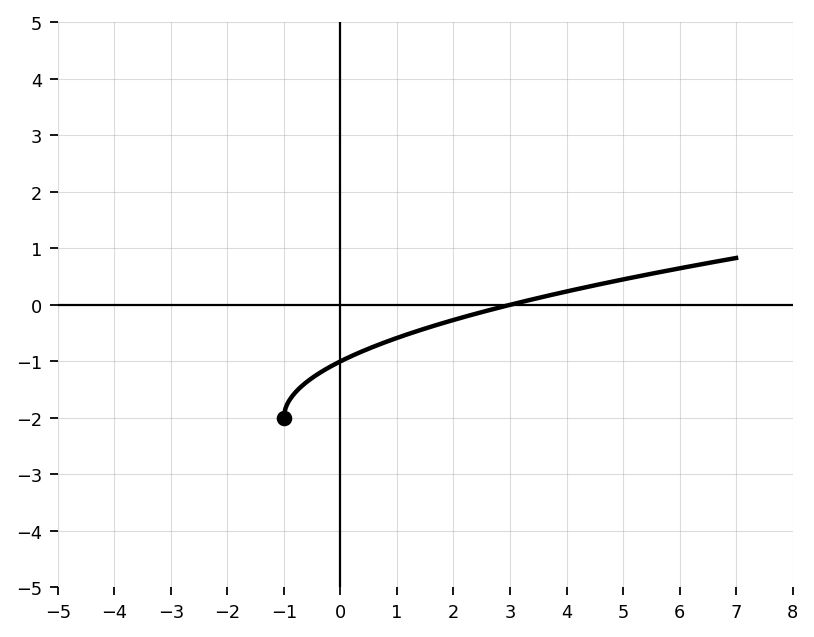
Compare the parent graph and transformed graph. Write the equation of the transformed graph.

Compare the parent graph and transformed graph. Write the equation of the transformed graph.

Let \(f(x)=x^2\). Write \(g(x)\) if \(f(x)\) is reflected over the \(x\)-axis, vertically stretched by a factor of 3, and shifted down 2 units.
Let \(f(x)=|x|\). Write \(g(x)\) if \(f(x)\) is shifted left 4 units and vertically compressed by a factor of \(\frac{1}{2}\).
Let \(f(x)=\sqrt{x}\). Write \(g(x)\) if \(f(x)\) is shifted right 7 units and up 3 units.
Let \(f(x)=x^3\). Write \(g(x)\) if \(f(x)\) is reflected over the \(x\)-axis and shifted left 2 units.
Describe the transformations of \(g(x)=4\sqrt{x+5}-1\) from the parent function.
Describe the transformations of \(g(x)=-\frac{1}{3}|x-2|+6\) from the parent function.
Describe the transformations of \(g(x)=2(x+3)^2-4\) from the parent function.
Use the graph to determine the left-hand limit, right-hand limit, function value, and whether the two-sided limit exists at \(x=0\).

Use the graph to determine whether the limit exists at \(x=-1\). Explain using left-hand and right-hand limits.

Use the graph to compare \(\lim_{x\to 0} f(x)\) and \(f(0)\). Are they equal?

Use the graph to determine whether the limit exists at the vertical asymptote. Explain the one-sided behavior.

Use the graph to determine the limits at \(x=-2\) and \(x=2\). State whether each limit exists.

Use the graph to determine \(\lim_{x\to 2} f(x)\), \(f(2)\), and whether the function value affects the limit.

Use the graph to determine whether the limit exists at \(x=2\). Justify using left-hand and right-hand limits.
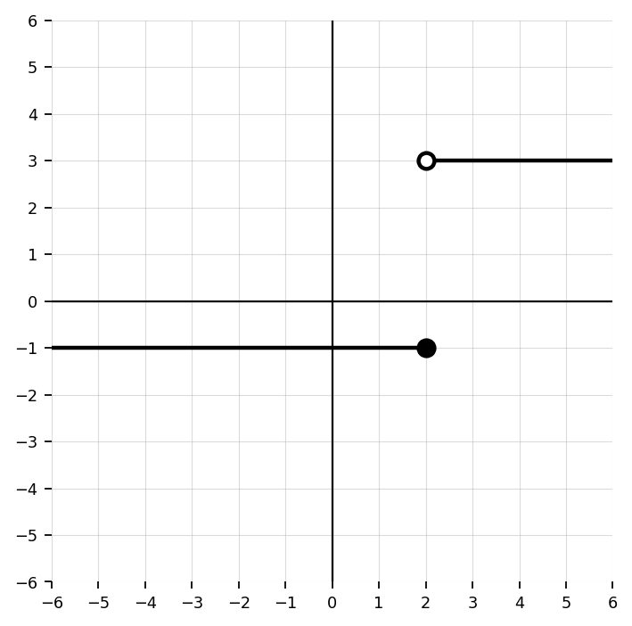
Use the graph to determine the limit as \(x\to 1\). If it does not exist, explain why.
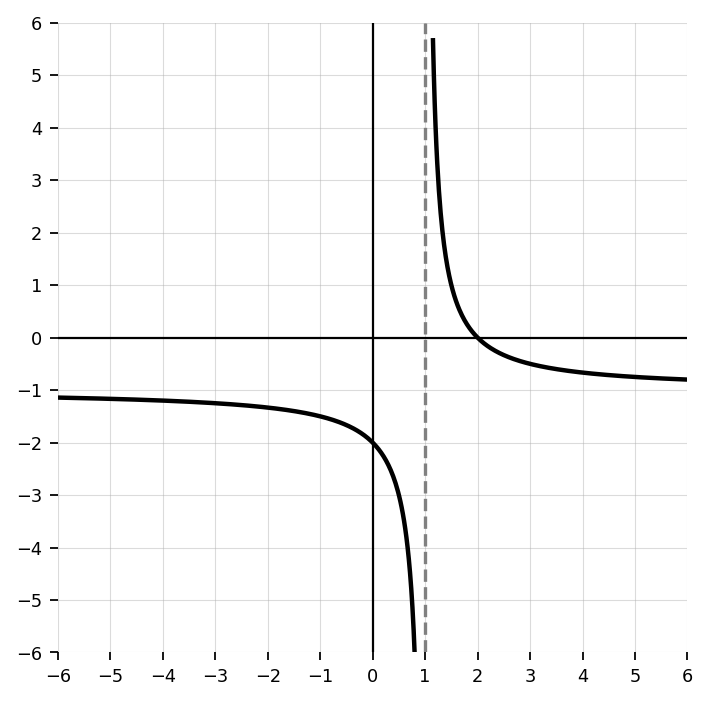
Use the graph to determine \(\lim_{x\to 3} f(x)\). Then explain why \(f(3)\) is different.
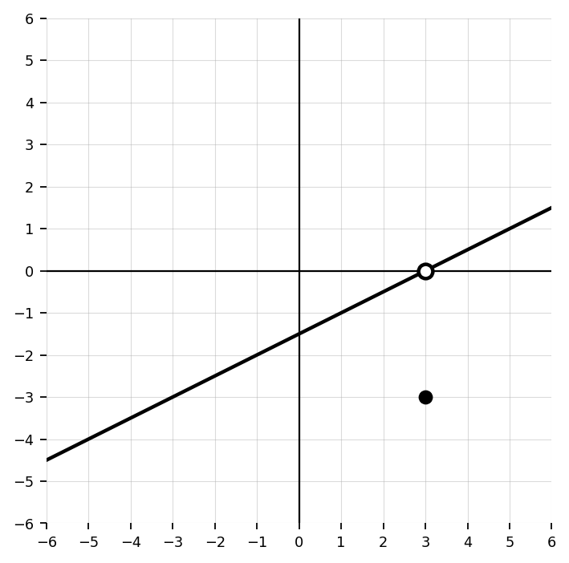
Use the graph to identify one \(x\)-value where a limit exists and one \(x\)-value where a limit does not exist. Justify both.

A graph has a hole at \((4,2)\) and a closed point at \((4,-1)\). What are \(\lim_{x\to 4} f(x)\) and \(f(4)\)?
A graph has a jump at \(x=5\), with \(\lim_{x\to 5^-} f(x)=1\) and \(\lim_{x\to 5^+} f(x)=6\). Does \(\lim_{x\to 5} f(x)\) exist? Explain.
A graph approaches \(+\infty\) from both sides as \(x\to -3\). Describe \(\lim_{x\to -3} f(x)\) using appropriate language.
Explain why a pointy corner can still have a limit even if the graph is not smooth there.
Two students solve \(f(x)=0\) for \(f(x)=x^2-7x+10\).
Student A: \((x-5)(x-2)=0\), so \(x=5\) or \(x=2\).
Student B: \(x^2=7x-10\), so \(x=7\) or \(x=-10\).
Which student is correct? Explain the error in the other solution.
The graph of \(f(x)=(x+2)(x-3)\) is shown.
- Solve \(f(x)=0\) graphically.
- Verify algebraically.
- Explain how the graph and algebra show the same solutions.

The graph of \(r(x)=-x^2+2x+3\) and the horizontal line \(y=3\) are shown.
- Solve \(r(x)=3\) graphically.
- Solve \(r(x)=3\) algebraically.
- Explain why one solution is easy to miss if you only estimate from the graph.
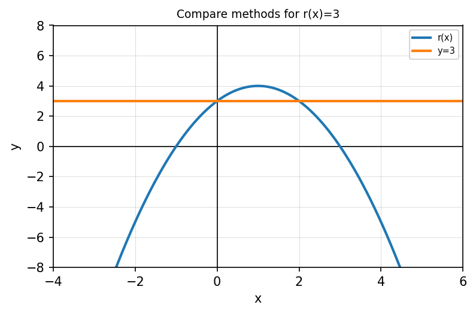
The graph of \(s(x)=1.5x-2\) and the line \(y=4\) are shown.
- Solve \(s(x)=4\).
- Write the solution as an ordered pair on the graph.
- Explain what the ordered pair means.
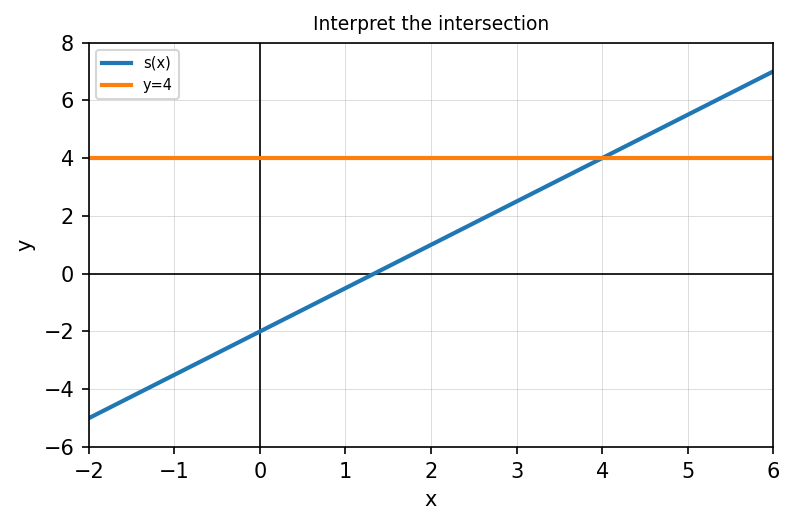
Let \(f(x)=2x^2-8x\).
- Solve \(f(x)=0\) by factoring.
- Evaluate \(f(4)\).
- Explain why \(x=4\) is not the only important input even though \(f(4)=0\).
A table for \(f(x)\) is shown.
| \(x\) | -3 | -2 | -1 | 0 | 1 | 2 | 3 |
|---|---|---|---|---|---|---|---|
| \(f(x)\) | 12 | 5 | 0 | -3 | -4 | -3 | 0 |
- Solve \(f(x)=0\) from the table.
- Can you determine all solutions to \(f(x)=0\) from this table? Justify your answer.
Let \(f(x)=x^2+bx+12\). One solution to \(f(x)=0\) is \(x=3\). Determine a possible value of \(b\), then verify your answer.
A student evaluates \(f(-2)\) for \(f(x)=3x^2-4x+1\) and gets \(-3\).
- Identify the student's likely mistake.
- Find the correct value of \(f(-2)\).
- Explain how parentheses affect evaluation.
Compare these two tasks for \(f(x)=x^2-4x\):
- Evaluate \(f(6)\).
- Solve \(f(x)=6\).
Complete both tasks and explain how they are different.
Create a factorable quadratic function \(f(x)\) such that \(f(x)=0\) has solutions \(x=-1\) and \(x=4\). Then verify both solutions.
The graph models revenue \(R(x)\), in dollars, from selling \(x\) items.
- Use the graph to estimate when \(R(x)=32\).
- Interpret the solutions in context.
- Explain why two different inputs can give the same output.

Let \(f(x)=a(x-2)(x+5)\). Choose a value of \(a\) and describe what stays the same and what changes about the solutions to \(f(x)=0\).
Compare the sets \((-2, 5]\) and \([-2, 5)\).
- How are they alike?
- How are they different?
- Give one value that belongs to the first set but not the second.
Explain why \((-\infty, 3]\) cannot be written as \(-\infty \le x \le 3\). Use complete mathematical reasoning.
A student says, “Parentheses mean the endpoint is not part of the set, so infinity should use brackets when it goes on forever.” Is the student correct? Explain.
Create two different intervals that both contain \(0\) but differ in whether they include \(4\). Write each interval in inequality notation and explain the difference.
A student drew the number line shown for the inequality \(-5 < x < -1\).
- Identify the error in the graph.
- Draw or describe the corrected graph.
- Write the correct interval notation.

A function has a domain described by \(-3 \le x < 6\).
- Write the domain in interval notation.
- Explain what values are allowed and what values are not allowed.
- Describe how the graph should show each endpoint.
Decide whether the statement is always true, sometimes true, or never true:
“If an endpoint is included in interval notation, the graph must use a closed circle at that endpoint.”
Justify your answer.
A set is represented by the inequality \(x<2\). Another set is represented by \(x\le2\).
- Write both in interval notation.
- Explain how a single point changes the notation and graph.
Write a set that includes exactly the values between \(-7\) and \(7\), includes \(-7\), but excludes \(7\).
- Write the inequality.
- Write the interval notation.
- Explain your endpoint choices.
The number line could represent the possible input values for a function.
- Write the domain in interval notation.
- Write the domain as an inequality.
- Explain why the endpoints might be excluded in a real problem.

A student writes the solution set “all numbers no more than \(10\)” as \((10,\infty)\).
- Explain the meaning of “no more than.”
- Correct the interval notation.
- Write the inequality notation.
Given the interval \((-4, 8]\), write a real-world situation where \(-4\) is not allowed but \(8\) is allowed. Explain why the endpoint choices make sense.
A student says the domain of $f(x)=\sqrt{x-4}$ is all real numbers because any number can be substituted for $x$. Explain the error and give the correct domain.
Explain why $x=2$ must be excluded from the domain of $g(x)=\frac{x+1}{x-2}$ even though the numerator is defined at $x=2$.
Compare the domains of $f(x)=\sqrt{x-3}$ and $g(x)=\frac{1}{x-3}$. Explain why the restrictions are different.
Two students analyze the same graph. Student A says the range is $[-2,5]$. Student B says the range is $(-2,5]$. The graph has an open point at the lowest output and a closed point at the highest output. Who is correct? Explain.
Use the graph to determine the domain and range. Then justify how endpoint types and arrows affected your answer.
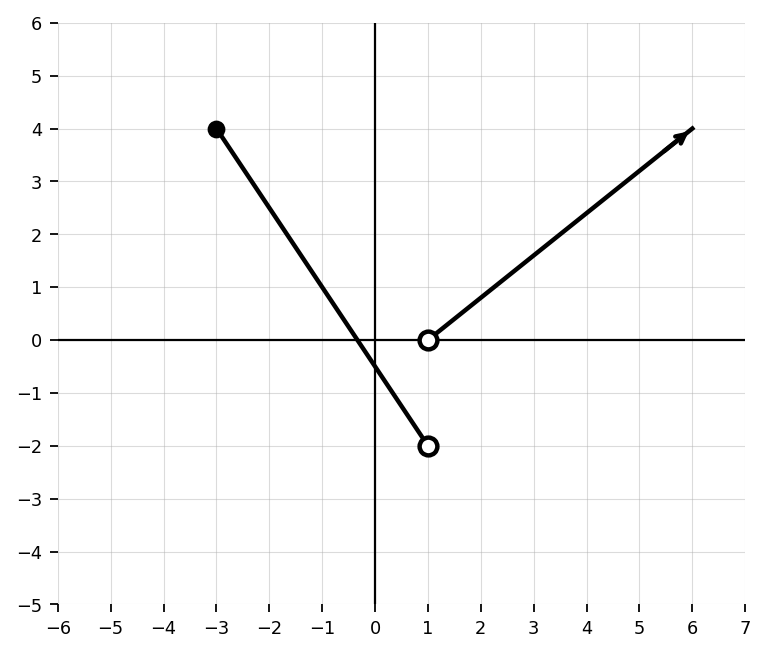
For $f(x)=\sqrt{x+6}$, determine the domain algebraically. Then describe what the graph must look like near its left endpoint.
A function models the number of students remaining in a gym after dismissal. Explain why the domain and range should not automatically be all real numbers, even if a formula could be evaluated for all real $x$.
A student finds the domain of $f(x)=\frac{x}{x^2-25}$ and writes $(-\infty,\infty)$ because the denominator is a polynomial. Identify the mistake and correct the domain.
A table shows outputs $-1,0,3,3,7$ for inputs $-4,-2,0,2,4$. A graph of the same function has arrows continuing beyond the table. Explain why the table alone may not show the full domain and range.
Explain how the domain restriction of $f(x)=\frac{1}{x+8}$ appears in the graph of the function.
Compare the domains of $f(x)=\sqrt{x}$, $g(x)=\sqrt{-x}$, and $h(x)=x^2$. Explain how the structure of each function determines its domain.
A graph has domain $[-6,2)\cup(2,8]$ and range $[-3,5]$. Describe one possible graphical feature that could cause $x=2$ to be excluded while nearby $x$-values are included.
A student says \(g(x)=f(x-5)\) shifts the graph left 5 units because of the minus sign. Explain the error and give the correct transformation.
A student says \(g(x)=-2f(x)+3\) only shifts the graph up 3 units. Explain what transformation was missed and how it affects the graph.
Use the graph to write an equation and justify each transformation using \(a\), \(h\), and \(k\).
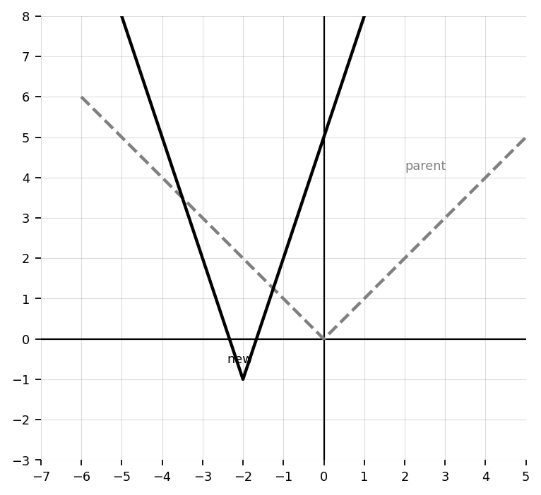
Use the graph to write an equation and justify each transformation using \(a\), \(h\), and \(k\).

Use the graph to write an equation and justify each transformation using \(a\), \(h\), and \(k\).

Use the graph to write an equation and justify each transformation using \(a\), \(h\), and \(k\).

Two students describe \(g(x)=3f(x+2)-4\). Student A says the graph shifts left 2, stretches vertically by 3, and shifts down 4. Student B says the graph shifts right 2, stretches vertically by 3, and shifts down 4. Who is correct? Justify your answer.
Compare \(g(x)=2f(x-1)+5\) and \(h(x)=2f(x+5)-1\). Explain how the transformations are the same and different.
Explain how the vertex or locator point helps you sketch \(g(x)=-|x-3|+2\) without making a table.
Explain how the locator point helps you sketch \(g(x)=\sqrt{x+4}-6\) without making a table.
Given that \(f(x)\) has point \((2,5)\), determine the corresponding point on \(g(x)=-2f(x-3)+1\). Explain your reasoning.
Given that \(f(x)\) has point \((-1,4)\), determine the corresponding point on \(g(x)=\frac{1}{2}f(x+2)-3\). Explain your reasoning.
A student claims the limit at \(x=-1\) does not exist because the graph has a break. Use the graph to evaluate the claim.

A student says \(\lim_{x\to 0} f(x)=4\) because \(f(0)=4\). Use the graph to explain whether the student is correct.

Use the graph to explain why the limit at \(x=-2\) does or does not exist. Your explanation must reference one-sided limits.
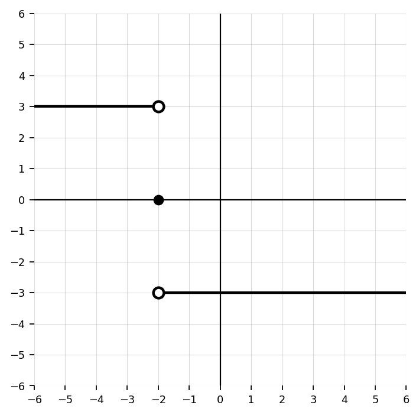
Use the graph to explain why the limit at \(x=0\) is an infinite limit rather than a finite number.

Use the graph to classify each special behavior shown as a jump, hole, point value difference, or vertical asymptote. Then state which limits exist.
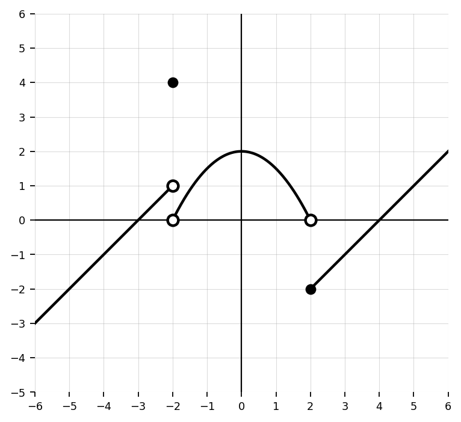
Use the graph to explain how the limit and function value can be different at the same \(x\)-value.
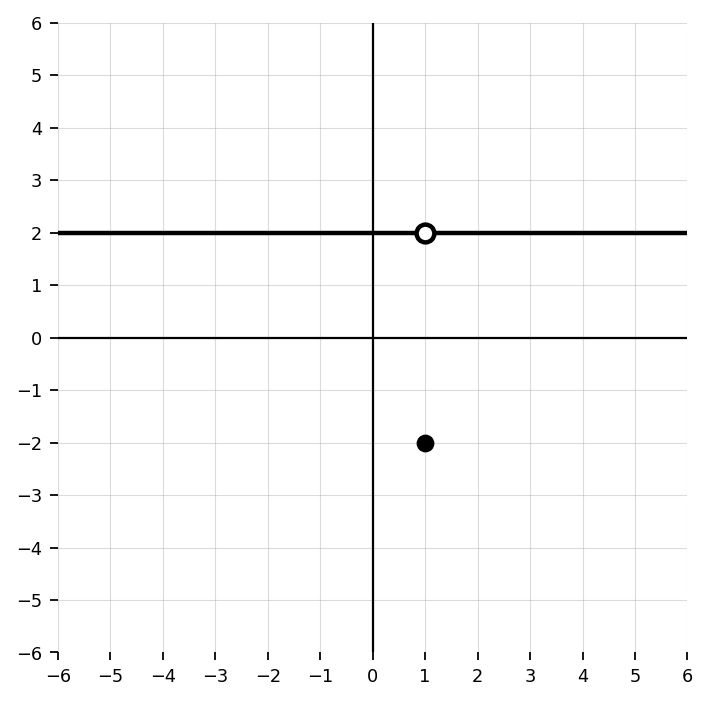
Use the graph to explain why changing one point on a graph may not change the limit.

Use the graph to explain why a vertical asymptote prevents the limit from being a finite value.

Compare these situations: a removable discontinuity, a jump discontinuity, and a vertical asymptote. Explain how limits behave differently in each case.
Create a short explanation that would help another student decide whether a two-sided limit exists from a graph.
A student says, “If \(f(a)\) is undefined, then \(\lim_{x\to a} f(x)\) cannot exist.” Explain why this statement is false.
A student says, “If the graph has a sharp corner, the limit does not exist.” Explain why this statement is false.
Design a table for a function \(f\) with exactly two visible solutions to \(f(x)=4\). Then write a short explanation of how your table shows those solutions.
Create a real-world situation that can be modeled by a linear function \(f(x)\). Define the input and output, write the function, and explain what solving \(f(x)=a\) means in your context.
Create a factorable quadratic function with two solutions to \(f(x)=0\). Then write a second question using the same function where students must evaluate \(f(c)\) for a specific input \(c\). Explain why these two questions assess different skills.
A classmate claims, “Solving \(f(x)=a\) is the same thing as evaluating \(f(a)\).” Write a response that uses an example, algebra, and words to prove or disprove the claim.
The graph models the height \(A(t)\), in meters, of an object after \(t\) seconds.
- Estimate the times when \(A(t)=16.2\).
- Explain why both solutions make sense in the context.
- Describe a time value that would not make sense in this context and explain why.

Build a problem that requires students to solve \(f(x)=a\) using a table first and then verify algebraically. Include the function, the table, the value of \(a\), and the expected solution(s).
Choose a linear function and a factorable quadratic function that both have \(f(2)=6\). Compare how solving \(f(x)=6\) is different for the two functions.
Write and solve a context problem where a quadratic function has two possible input values for the same output. Explain why both answers are mathematically correct and how the context determines whether both answers are reasonable.
Design a matching activity with three representations of the same set: a verbal description, an inequality, and interval notation. Include the correct answer and explain why the representations match.
Create a real-world restriction that should be represented by \([0,\infty)\). Write the context, define the variable, and explain why \(0\) is included.
Create a real-world restriction that should be represented by \((0,\infty)\). Write the context, define the variable, and explain why \(0\) is excluded.
A classmate claims, “The intervals \([2, 5]\), \((2, 5)\), \([2, 5)\), and \((2, 5]\) are basically the same because they all go from \(2\) to \(5\).” Write a response that explains why the endpoint notation matters.
Create two different solution sets that would look almost identical on a number line but are not the same because of endpoint inclusion. Write both sets in interval notation and explain the difference.
The number line could represent the number of months a student may participate in a program.
- Write a possible real-world interpretation for the graph.
- Write the interval notation.
- Explain why both endpoints are included in the context.

Write a mini-lesson for a student who keeps confusing parentheses and brackets in interval notation. Include one example with a finite interval and one example with infinity.
Create a complete problem where students must move between all three representations: inequality notation, interval notation, and a number-line graph. Include the problem, the correct answer, and a brief explanation.
Create a function whose domain is $[4,\infty)$. Explain why your function has that domain.
Create a rational function whose domain excludes exactly $x=-3$ and $x=5$. Explain your reasoning.
Design a graph with domain $(-\infty,1]\cup(3,\infty)$ and range $[-2,\infty)$. Describe the graph or sketch it.
A student claims that every function with a restricted domain must have a restricted range. Decide whether this claim is always true, sometimes true, or never true. Support your answer with examples.
A school sells tickets for a dance. Tickets cost $8 each, and the room can hold at most 250 students. Define a function for revenue based on tickets sold. State a reasonable domain and range, and explain why both are restricted.
Create two different functions with the same domain $x e 2$ but different ranges. Explain how you know the domains match and the ranges differ.
A student models the height of water in a tank with $h(t)=20-2t$ and gives the domain $(-\infty,\infty)$. Critique the domain and propose a more reasonable domain and range.
Write an equation, table, or graph description for a function with domain $[-2,6]$ and range $[1,9]$. Then explain how your representation guarantees both the domain and range.
Create an equation of the form \(g(x)=a|x-h|+k\) whose graph has vertex \((3,-2)\), opens downward, and is narrower than the parent function. Justify your equation.
Create an equation of the form \(g(x)=a(x-h)^2+k\) whose graph has vertex \((-4,5)\), opens upward, and is wider than the parent function. Justify your equation.
A graph is shown. Write a possible equation and explain why more than one equation might be possible if the parent function is not identified.
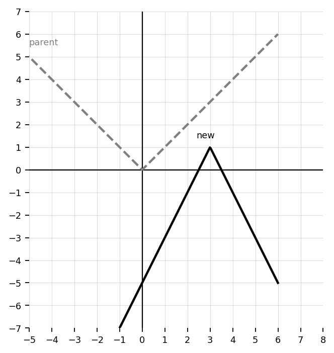
A graph is shown. Write a possible equation and explain how the vertex or locator point helped you choose the parent function.

A graph is shown. Write a possible equation and justify the order in which you identified the transformations.
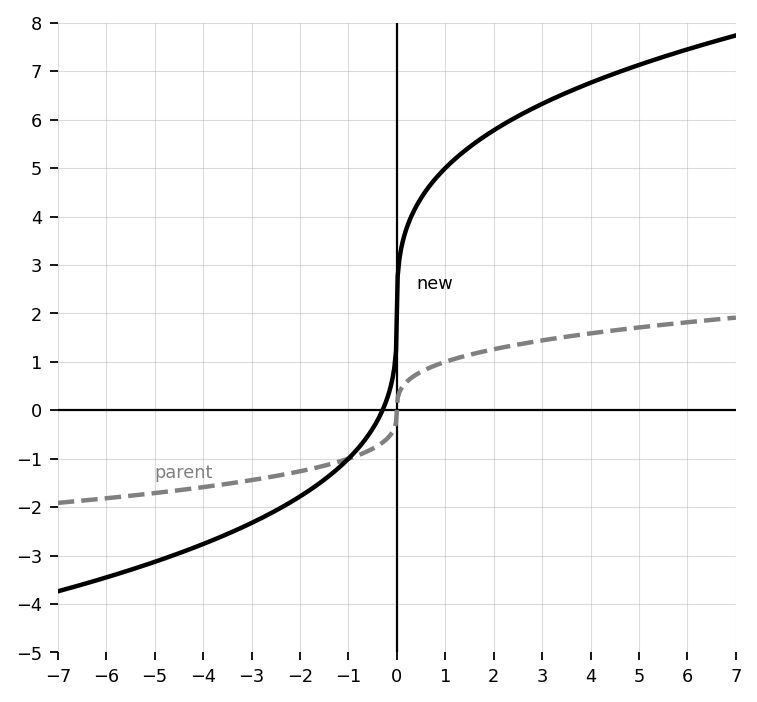
A graph is shown. Write a possible equation and justify how the endpoint or locator point helped determine the transformation.
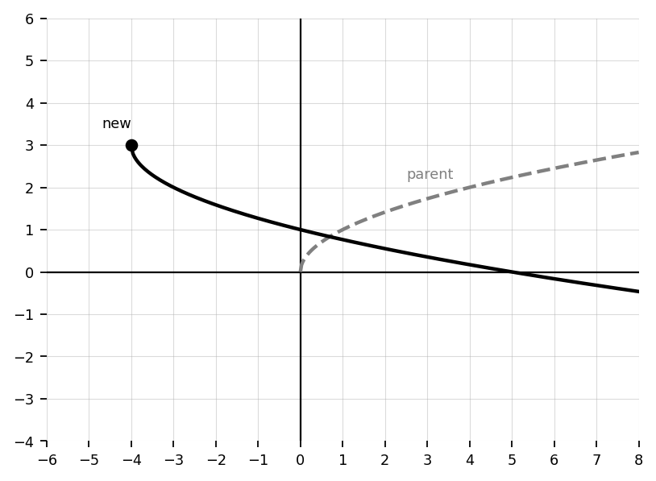
Create two different transformed functions using the same parent function \(f(x)\) that both have a vertical shift up 2 but different stretches or reflections. Explain how their graphs would differ.
Design a transformed function that has a key point at \((-2,7)\) and is a reflection of a parent function over the \(x\)-axis. State your parent function, write the equation, and justify your choices.
Create a graph where \(\lim_{x\to 2} f(x)=5\) but \(f(2)=-1\). Include a brief explanation of how your graph satisfies both conditions.
Create a graph where \(\lim_{x\to -3^-} f(x)=2\), \(\lim_{x\to -3^+} f(x)=-4\), and \(f(-3)=0\). Explain why the two-sided limit does not exist.
Create a graph where \(\lim_{x\to 1} f(x)\) does not exist because of a vertical asymptote. Describe the one-sided behavior.
Use the graph to write a complete limit analysis at each special \(x\)-value shown. Include left-hand limits, right-hand limits, function values, and whether each two-sided limit exists.

Use the graph to write a complete explanation of the relationship between the limit and function value at the removable discontinuity.

Use the graph to create two true limit statements and one false limit statement. Then explain why the false statement is false.

Use the graph to revise a student’s incorrect claim: “The limit exists because the function has a value at \(x=0\).”

Design a graph that includes a hole, a jump, and a point where the limit exists but is not equal to the function value. Label the important points and write one limit statement for each feature.